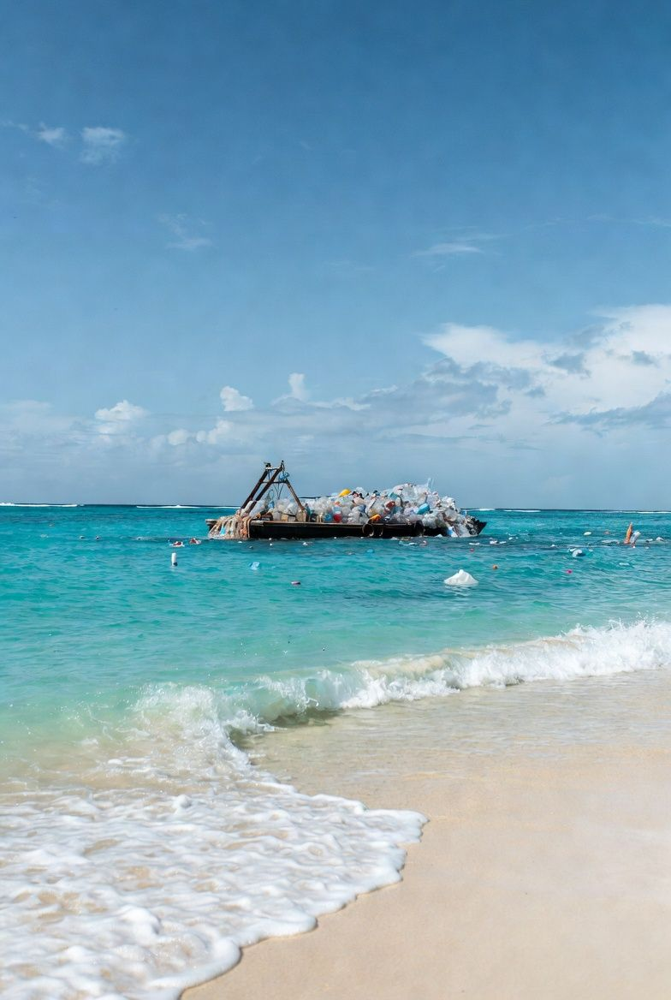

Lake plastic recovery

Lake Plastic Recovery
Saving Planets' own initiative: a simple, verifiable rule for any lake cleanup project — recover plastic from freshwater lakes before it travels downstream. Surface skimming, shoreline collection, and diver-assisted recovery, so litter never reaches rivers and oceans.
What are the Lake Plastic Recovery Five W's and impact statement?

Clean Up the Lake
A Nevada nonprofit that scuba-dives to remove submerged litter from freshwater lakes. Their flagship 72 Mile Cleanup of Lake Tahoe removed over 25,000 pounds, and they have since expanded across the Sierra Nevada and beyond, logging 36,177 pounds in total since 2018, per their stats page.
What are the Clean Up the Lake Five W's and impact statement?

Great Lakes Plastic Cleanup
A binational initiative of Pollution Probe and the Council of the Great Lakes Region using Seabins, PixieDrones, and beach-cleaning robots to capture plastic across the world's largest freshwater system. Over 277,000 pieces removed and reported through 2025.
What are the Great Lakes Plastic Cleanup Five W's and impact statement?

Restoring the Lake Depths
A Nevada nonprofit using a fleet of four ROVs — including the flagship Deep Emerald — plus volunteer scuba and free divers to remove submerged debris from Lake Tahoe's depths, down to 1,640 feet. Over 13 tons removed in summer 2024 alone.
What are the Restoring the Lake Depths Five W's and impact statement?